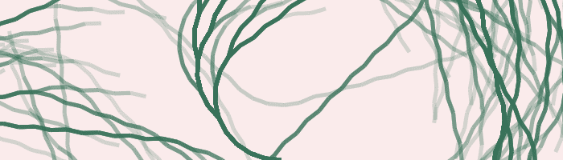

Pluto.jl
Pluto
0.20.17
JuliaCon 2025 Workshop
To learn more about Pluto:
Pluto.jl website
Pluto.jl GitHub repository
(give us a 🌟!)
Pluto.jl documentation
Install
To install Pluto:
Installation instructions
Workshop
Workshop materials:
Boring notebook TODO LINK
Slides TODO LINK

Edit this page